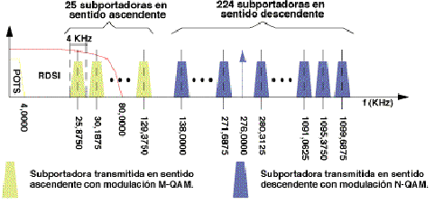
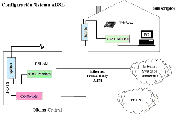

Fue desarrollada en 1980 por el investigador Joe Lechleider, a partir de la tecnología de acceso desarrollada para BRI , RDSI.
En una primera etapa coexistían dos técnicas de modulación para ADSL:
Pero, finalmente, los organismos de estandarización (ANSI, ETSI e ITU) se han decantado por la solución DT.
Esta modulación (DT) consiste en el empleo de múltiples portadoras, en lugar de una (como ocurre en los módems de banda vocal). Cada una de estas portadoras, denominadas subportadoras, es modulada en cuadratura (modulación QA), por parte del flujo total de datos que se van a transmitir. Estas subportadoras están separadas entre sí 43125 KHz, y el ancho de banda que ocupa cada subportadora modulada es de 4 KHz.
El reparto del flujo de datos entre subportadoras se hace en función de la estimación de la relación señal a ruido en la banda asignada a cada una de ellas. Cuanto mayor es la relación, tanto mayor es el caudal que se puede transmitir por una subportadora. Esta estimación se lleva a cabo al comienzo, cuando se establece el enlace entre el terminal del usuario y el terminal central. La técnica de modulación usada es la misma en ambos terminales. La única diferencia radica en que el terminal central dispone de hasta 256 portadoras, mientras que el terminal de usuario sólo puede disponer, como máximo de 32. La modulación es bastante complicada; sin embargo, el algoritmo de modulación se traduce en una IFFT en el modulador, y en una FFT en el demodulador.

Esta tecnología permite la utilización simultánea de la red telefónica básica (RTB) y del servicio ADSL. Es decir, el usuario puede hablar por teléfono a la vez que navega por Internet.
Para ello, establece tres canales independientes sobre la línea telefónica estándar:
Los dos canales de datos son asimétricos, es decir, no tienen la misma velocidad de transmisión de datos, siendo considerablemente mayor la del canal de recepción que la del canal de envío de datos.
Esta asimetría tiene sentido en sistemas en los que se dé prioridad al acceso a información (por ejemplo, Internet) en los que el volumen de información en sentido red-usuario es mucho mayor que en sentido contrario.

|
|
|
|